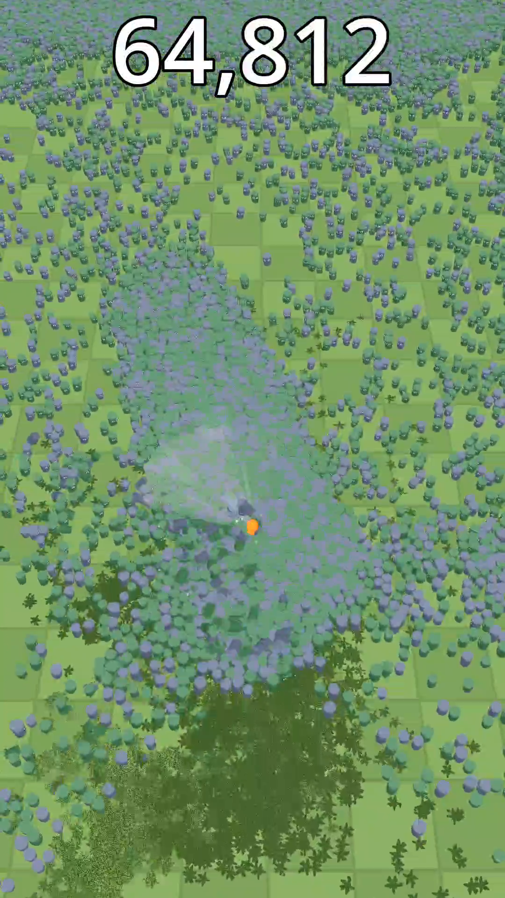
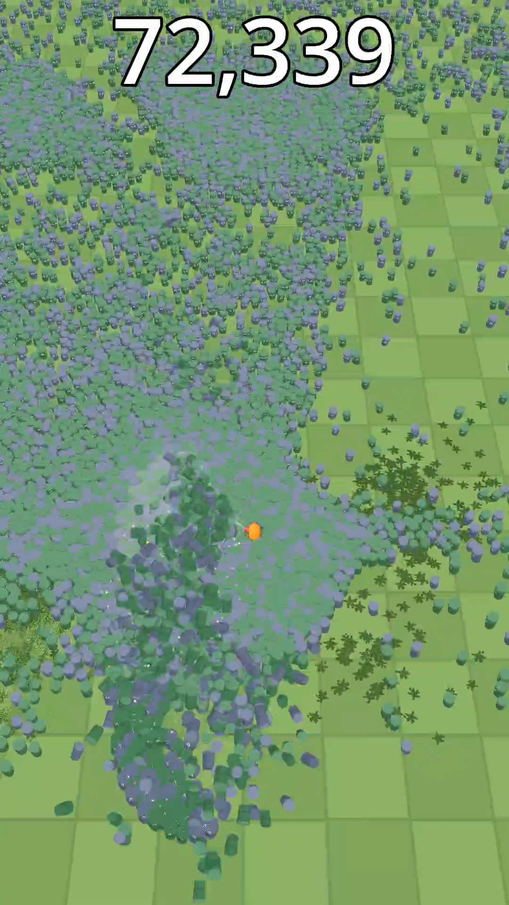

Way Too Many is a portrait, one-thumb horde game: one silly weapon against 10,000 cartoon enemies, in runs of two or three minutes. The whole idea lives or dies on the number in the name, so the project starts with a hard rule. Nothing else gets built until 10,000 enemies hold a steady 60 fps on the target phone.
The target is a Xiaomi 11T Pro (Snapdragon 888, Adreno 660), a 2021 phone that is now firmly mid-range. The gate passed on November 4. This post is how.
NO NODE PER ENEMY
The engine is Godot 4, but the horde does not live in Godot's scene tree. 10,000 nodes, or 10,000 physics bodies, would spend the whole frame on bookkeeping. Instead, one C++ GDExtension node called CrowdSim owns every enemy as plain arrays: one array for x positions, one for z, one for velocities, one for HP, and so on. Updating the crowd is a tight loop over memory that sits next to itself, which is the kind of work a phone CPU is actually good at.
GDScript only does glue: the camera, the joystick, the HUD. Anything that runs per enemy stays in C++, with no allocations per frame.
FINDING NEIGHBOURS FAST
A crowd only looks like a crowd if enemies push each other apart. Checking every enemy against every other one is 50 million pairs, so the simulation uses a uniform grid. Every tick it does a counting sort of all enemies into cells sized to one enemy's diameter, and copies their positions and velocities into that sorted order. After that, each enemy only looks at a 2×2 block of cells, and those cells are already next to each other in memory. The same grid answers the weapon's question: who is inside the blower's cone right now?
A MAP THAT POINTS AT THE PLAYER
10,000 enemies cannot each run their own pathfinding. A few times per second, a flow field is rebuilt on a coarser grid: one pass outward from the player's cell, and every cell stores a direction toward the player. Each enemy just reads the arrow under its feet.
The first version used a grid Dijkstra with diagonal moves, and it had a visible flaw: enemies lined up into straight lanes along the diagonals and axes, because that is the shape grid distances make. Switching to Fast Marching, which solves for real Euclidean distance on the grid, removed the lanes. The field is double-buffered and rebuilt in its own task, so the main simulation never waits for it.
30 HZ SIMULATION, 60 HZ SCREEN
The simulation runs at a fixed 30 ticks per second, split across Godot's WorkerThreadPool. Rendering runs at 60 and interpolates between the last two ticks, so motion stays smooth even though the crowd only updates every other frame.
The important trick is that the tick runs asynchronously. It is launched at the end of one frame and collected at the start of the next, so a tick that takes about 4 ms of work across cores barely touches the main thread. Input for the next tick is queued, and the renderer reads a snapshot, so nothing in GDScript ever races the worker threads. A fixed tick with a seeded random generator also keeps the simulation deterministic, which a daily challenge will need later.
ONE UPLOAD PER ENEMY TYPE
Every enemy type is one MultiMesh. Each frame, all 10,000 transforms plus a bit of custom data are written into one buffer and handed to the GPU with a single multimesh_set_buffer call. No per-instance calls, no per-enemy draw calls.
The animation is in the shader. The custom data per enemy carries a phase, a hit flash, a knockback amount and a walk speed, and the vertex shader turns those into bobbing, squash and stretch, and a wobble. Knocked-back cans lean away from the blast. Dead ones get X_X eyes.


DEATHS HAVE TO LOOK GOOD
A game built to be clipped needs deaths worth watching. A defeated can is handed to a separate effects system: a pooled corpse with simple verlet physics that gets launched up and away, spins, bounces, then sinks and leaves a splat on the ground. A few pieces of debris fly off with it. Everything is pooled up front, so a wave of a hundred deaths in one frame costs nothing extra in allocations.
MEASURING THE RIGHT THING
This is the part that took the longest, and it is the lesson I would pass on.
My first benchmark measured frame times inside the game, and it said 41% of frames were late. Most of that was not real. Godot's frame delta is smoothed, which hides hitches, so I switched to raw timestamps. Then those raw timestamps jittered because Android's frame pacing (Swappy) pipelines frames: the CPU can finish a frame late and the display still shows it on time. After the real fixes (the async tick, and catch-up ticks that no longer pile up) the in-game number dropped to about 1%, but it still was not the truth.
The truth is what the display actually presented. Android's SurfaceFlinger keeps the present timestamps of every frame for each window, so the benchmark script reads those over adb during a 60-second run at 10,000 enemies and counts every interval longer than 20.8 ms (one and a quarter frames at 60 Hz).
| Measured on the Xiaomi 11T Pro, 10,000 enemies | Result |
|---|---|
| Frames presented late over a 60 s run (two runs) | 0 / 3,576 and 3 / 3,575 |
| Simulation work per 30 Hz tick, async on worker threads | ~4.0 ms |
| GPU time per frame | ~8.8 ms |
The rule I'm keeping: profile on the real device, and trust the display's timestamps over the game's own. A frame the player never sees late is not a dropped frame.
WHAT IS NEXT
Gate 1 was only about the tech. The game still has blockout art, one weapon and no sound. Gate 2 is about feel: hit feedback, juice and audio, one level and no meta at all, until the ten-second moment of a crowd breaking apart is fun on its own. There is also one known visual bug to chase: a dark patch that sometimes forms in the horde for about a second, far from the player, and then dissolves.
If you want to watch it grow, short clips go up on TikTok and YouTube, and the longer story lands here.